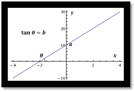
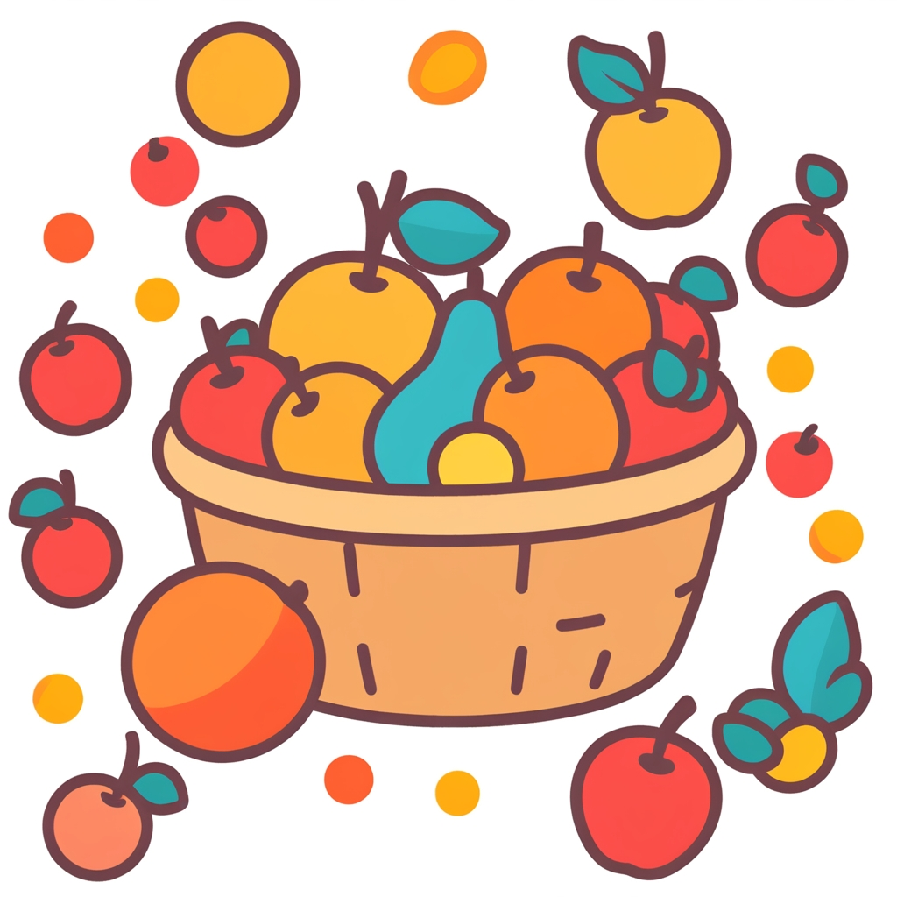
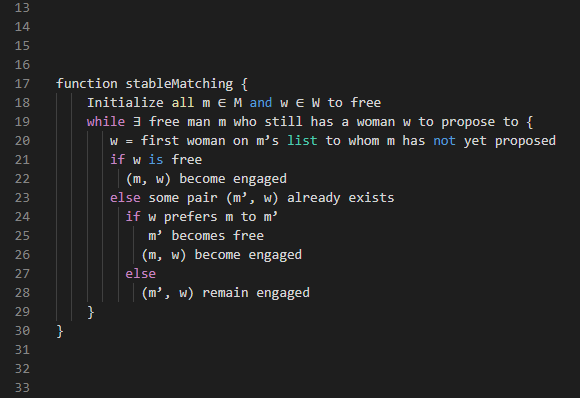

1 Introduction to ABM
Agent-based modelling (ABM) is a powerful tool for studying complexity by creating dynamic simulations using formal definitions, rules, and populations, resulting in the study of emergent properties in social and ecological systems. By adopting a bottom-up perspective, it allows for a deeper understanding of the processes that shape real-world phenomena.
To better contextualise ABM, we start by positioning this modelling approach in relation to other modelling approaches. We then describe ABM’s central concepts, including what makes it often more intuitive and adequate for representing certain types of phenomena, particularly social interactions, yet paradoxically being more complex and unpredictable than other simulation models.


1.2 ABM as a tool for complexity
Agent-based modelling (ABM) is a tool that can be used to explore phenomena through the lens of complexity science, that is as manifestations of complex systems. Complex systems are characterized by a high number and diversity of causal relationships, non-linearity (feedback loops), self-organization, self-similarity, and path dependence. Complex adaptive systems are a special case of complex systems, one that is considered able to adapt to (and learn from) its environment. Such systems are better understood through its smaller parts and their interaction.

ABM is a methodological framework that allows researchers to simulate the dynamics of complex systems. The approach involves:
- Formalizing definitions of elements within the system.
- Defining rules as algorithms to govern interactions between elements.
- Simulating a population as distributed processes.
- Creating a bottom-up approach to modelling to study emergent properties.
- Incorporating stochasticity to generate probabilistic results.


Flocking behaviour in ‘Behavioral systems’ by Danil Nagy in ‘Generative Design’, medium.com
ABM is a type of simulation that is particularly useful for modelling social systems because it allows for the representation of human agency and interaction. In ABM, a phenomenon is modelled through populations of autonomous agents and their interactions. This approach contrasts with other modelling techniques that represent causal components as aggregated variables and parameters. The use of distributed computation allows for the generation of complex dynamics that are not reducible to analytical solutions. ABM is also useful for exploring the emergence of social patterns and structures from the bottom up.
ABM is a modular approach that can integrate parts from other modelling approaches, allowing for a more comprehensive representation of complex systems. For example, ABM can integrate environmental and spatial aspects, the agency of individuals and institutions, group formation, cooperation and competition, cognitive processes, and communication. In archaeology and other disciplines such as geography and environmental sciences, this multi-paradigm approach has been favoured. The approach aligns well with the study of socio-ecological systems (SES) which acknowledges the interrelationships between natural and artificial worlds.
1.3 ABM as mathematical models
Agent-based models, like all simulation models, are a type of mathematical model. As the term is used in science, we can define models as representations of a system or a phenomenon through its essential characteristics, often involving elements, relationships, and underlying assumptions. Mathematical models are simply more advanced in their logical definition through the process of formalisation. The informal or less formal models are those that are defined only through natural language speech (e.g., in a live discussion), text (e.g., in an article or book), or through certain graphical pieces (e.g., infographics, diagrams).
Despite this distinction, there is no genuine opposition between models with different levels of formalisation. Mathematical formalisation is mainly used to implement and test the logic models stated less formally. Among the advantages of mathematical formalisation, the most important are univocity (i.e., things have a single definition) and commensurability (i.e. things can be measured or counted). These properties set formal models apart from models formulated purely with natural languages, among other things, allowing for a significant improvement in the robustness of our reasoning. Keep in mind, though: formalisation can also harm the intelligibility of our models, because they move away from natural languages.
Within the large family of mathematical models, ABM models lie typically within a category that can be characterised as explicative or mechanistic. Explicative models are focused on an explanation, expressing processes through realistic causal relationships between variables, often including assumptions. Non-explicative or descriptive mathematical models are used more strictly to describe, reproduce or extrapolate the relationship between variables (i.e., most statistical models). The latter models are about patterns or trends in data, while the former are about the mechanisms underlying data, at least as we can define them based on our current understanding of the phenomena’s domain. Unlike descriptive models, explanatory models seek to explain why a phenomenon occurs by formalizing mechanisms through causal relationships.

The line between these categories is blurred and confounded by many models and model users. Notice, for example, that the very term “explanation” is widely used in non-mechanistic ways (e.g., when it is said that the educational level of a person explains that person’s income). However, the bulk of models on each side is considerable, and ABM models, in particular, have traits that are undeniably linked to the formulation of mechanisms.
To help understand this distinction, we can think about one of the most simple and popular descriptive models used today: the linear regression model.

We use this regression models to summarise the relationship between two variables in a dataset by finding a line that best fit the point distribution. In the case of the simple linear regression, we define a parametric equation that corresponds to a straight line in an Cartesian two-dimensional space:
y = a + b·x

Geometric representation of a linear regression model
A linear regression model has two variables, x and y, which define two orthogonal dimensions, and two parameters, a and b, which determine the value of y when x = 0 and the tangent of the angle formed by the line with the x dimension. These are “meaningless” (semantically empty) in the model design, even if we deliberately choose x as the “independent” variable, despite how they are interpreted at a higher level of analysis.
The semantic emptiness of descriptive models might seem irrelevant at first. A linear regression does help us to understand data and can make effective predictions. However, the meaning of these understandings and predictions comes from our explanatory models, which are only loosely connected to the equation we use. Assuming descriptive model and interpretation are directly connected can lead to misrepresenting data, or, worse, lead to faulty reasoning about the underlying phenomenon.

To put an archaeological example, imagine we have two variables measured in a collection of sites, the estimated maximum area and the count of potsherds on the surface. Imagine that we can define a regression model that states a positive correlation exists between them. Assuming our dataset is large enough and not radically biased, we could probably interpret that built area influences (i.e., causes, in a weak sense) the abundance of potsherds on the surface. It would not be necessarily illogical to conclude this. Yet, the relationship described in the model is ultimately a correlation (no archaeologist would think that one is directly causing the other).
Target reality:

Observations:

Descriptive model:

A model that return the output given the input
Explanatory model:

A model that returns the output given the input and the definition of a mechanism

The trend expressed by the linear model is but a “hint” of the mechanisms that are or could be postulated to explain it. Any hypotheses about the reason behind the correlation must be formulated outside the model, before or after its creation, for instance, by combining it with a natural language model. Thus, a descriptive model is inherently incomplete as an analytic tool and remains trivial unless it is associated with an external explicative model, formal or informal.
Still, descriptive mathematical models have been proven to be very useful and are widely adopted. Consider that in the field of artificial intelligence, the success of the descriptive models encompassed by machine learning have pushed aside other modelling approaches that uses programmed or procedural rules, from which ABM has branched. Within the exploration of data-driven methods, some scholars have even started to question the concept of “explanation” itself, posing that it might be a well-hidden fallacy of human cognition. On the other hand, it is still debatable how much human understanding can come from descriptive models alone.
1.4 ABM as simulation models
“a situation in which a particular set of conditions is created artificially in order to study or experience something that could exist in reality.” Oxford Advanced American Dictionary
“a: the imitative representation of the functioning of one system or process by means of the functioning of another a computer simulation of an industrial process
b: examination of a problem often not subject to direct experimentation by means of a simulating device” simulation, Merrian-Webster
“A simulation is an imitative representation of a process or system that could exist in the real world. In this broad sense, simulation can often be used interchangeably with model. Sometimes a clear distinction between the two terms is made, in which simulations require the use of models; the model represents the key characteristics or behaviors of the selected system or process, whereas the simulation represents the evolution of the model over time. Another way to distinguish between the terms is to define simulation as experimentation with the help of a model.” Simulation, Wikipedia
1.4.1 Algorithmic process
Simulation is a numerical approach to solve mathematical models. Simulation models are mathematical models that describe a mechanism and when iterated or repeated can represent a process, i.e. change through time caused by the mechanism. They are particularly useful for studying complex systems with non-linear relationships and feedback loops, and can help to generate data that can be used to test the validity of the model. There is a large variety of approaches in simulation; however, they all share this fundamental intent of representation of a process.
Fruit-in-the-basket simulation model
entities: basket, fruits, us (basket-fillers).
mechanism: a basket can contain \(N\) fruits (fruit-basket relationship), we can add fruits to the basket (us-fruit and us-basket relationships).
simulation step: if the basket is not full, we add \(X\) fruits or less to the basket.
process or dynamics: an empty basket will get full with \(N\) fruits after \(T\) steps have passed, where \(T={ceiling}(N/X)\).
explanatory meaning: Why the basket has \(N\) fruits? Because (a) it can only hold \(N\) fruits, and (b) we have added \(X\) fruits \(T\) times.


1.4.2 Distributed processes
Social simulation models, specifically, apply these methods to social science topics, emphasizing the role of human agency and distributed computation. Agent-based modelling (ABM) is a common technique in social simulation, representing a phenomenon through populations of autonomous agents and their interactions.


In contrast with other mechanistic and dynamic mathematical modelling approaches, ABM seeks to represent a phenomenon by explicitly modelling its parts. Therefore, ABM involves the expectation that the phenomenon at the macro-level emerges (can be deduced) from the dynamics at the micro-level. Moreover, ABM implies that the parts, the agents, constitute ‘populations’, i.e., they share common properties and behavioural rules. The ‘agency’ behind the term ‘agent’ also implies that these parts have certain autonomy with respect to each other and the environment, which justifies simulating their behaviour at an individual level.
In practice, ‘autonomy’ often translates as the agents’ ability to take action, move, decide, or even think and remember. Decision-making is a central aspect of agents and most agent designs can be sufficiently expressed as flowcharts. Nevertheless, agent-based models also include entities that are technically agents (on the terms of multi-agent systems), but lack many of such abilities or are not considered real/material discrete entities. The most common case is to represent space sectors as agents fixed to unique positions in a grid to facilitate the implementation of distributed spatial processes (e.g., the growth of vegetation dependent on local factors). This type of agent is more commonly named as “cellular automaton” (cellular automata, in plural), In NetLogo, these entities are predefined as patches and are extensively used in combination with mobile agents in models in ecology and geography.
1.4.3 Stochasticity
An important and distinctive aspect of agent-based models is that they are unavoidably stochastic, i.e., at least some processes are fed by random sequences. By definition, the order in which agents of a type perform their processes should not be predefined and, overall, should not be the same followed every iteration of the model. Thus, the only unbiased way of scheduling processes in ABM is to randomize all distributed sequences. This is (usually) not the case in models based on differential/difference equations, where the equations calculating variables are solved following a particular fixed order.
Methodologically, introducing randomness is a way of accounting for the entire spectrum of possibilities, whenever a certain aspect of the model is undertheorised or cannot be controlled in real scenarios. More importantly, it is justified whenever the modeller believes that the intended behaviour is independent of a specific value or order.
For those with no previous experience with computer science: note that “random” for a computer is not like “rolling dices”. We are getting values of a preordered sequence presumably unrelated to the process at hand. The programs creating these sequences are called pseudorandom number generator or RNG, for short. Sequences will be different every time we run our program (i.e., simulation), unless we preset the RNG using a specific ‘seed’, an integer often spanning a massive range of positive and negative numbers. Setting a particular RNG seed is, in fact, good practice, and helps enforce the reproducibility of simulation results.
This technique is also helpful in creating variation within a population of agents or between the global conditions of simulation runs. Such a thing is accomplished by drawing the values of variables from probability distributions, defined through hyperparameters (e.g., drawing the age of individuals in a classroom from a normal distribution defined by two parameters, age_mean and age_standardDeviation). Unfortunately, a typical bad practice is not exposing such hyperparameters, having these ‘hard-coded’ as if their value were an intrinsic part of the model and thus the mechanisms it represents. This bad coding element, often called “magic numbers”, can and should be addressed during model implementation.
1.4.4 A point of comparison: Lotka-VolterraPredator-prey model
Compared to other modelling and simulation approaches, ABM is more intuitive but also more complex.
For example, the Lotka-Volterra predator-prey model in ecology is a pair of differential equations that are relatively simple and conceptually straightforward.
\[ \frac{dx}{dt}=\alpha x-\beta xy \] \[ \frac{dy}{dt}=\gamma y+\delta xy \]
where \(x\) and \(y\) are the population density of prey and predator, respectively. \(\alpha\) and \(\gamma\) are the maximum intrinsic growth rate of each population and \(\beta\) and \(\delta\) are the effect of the presence of predators on prey and of prey on predators. Note that the first effect is negative and the second is positive.
This simple model has became very famous for being able to express the following dynamics:
assumption: prey population grows based on unspecified resources (intrinsic growth rate)
more prey → more food for predators, so more predators will survive and reproduce
more predators → more prey will be killed, so less prey will survive and reproduce
less prey → less food for predators, so fewer predators will survive and reproduce
fewer predators → less prey will be killed, so more prey will survive and reproduce
more prey → more food … (the cycle begins again)

Example of Lotka Volterra dynamics
The same model can also be implemented with ABM (see the comparison in NetLogo’s Model Library Wolf-Sheep Predation (Docked Hybrid)). The ABM implementation requires many additional specifications on how predator and prey agents should behave individually. Even though it is not strictly necessary to represent the core mechanism, ABM variations of the Lotka-Volterra model often aim to include more complexity. In the case of the Wolf-Sheep model mentioned, there is an explicit account of the base resource (i.e., the prey of the prey), named grass, which is implemented as a property of spatial units. These additional specifications normally help the model be more intuitive and realistic but also significantly complicate the model design and implementation, even though generating similar aggregate dynamics as the equation-based version (i.e., oscillation harmony between prey and predator populations).

NetLogo user interface running the Wolf-Sheep Predation model
1.5 ABM? It’s probably multiparadigm modelling
Last, another significant advantage of ABM is that it can include parts (algorithms, submodels) that belong to other modelling approaches. For example, we can quickly devise a model where a population of agents runs in parallel with a full-fledged Dynamic Systems model through a set of difference equations. Commonly, ABM models are ensembles created with parts that technically are not ABM. This is why some ABM modellers and modelling platforms use terms like “multiparadigm modelling” or “hybrid modelling”, which is more precise for many cases. Unfortunately, these were not adopted more widely and “agent-based modelling” continues to be the most common term, particularly in archaeology.